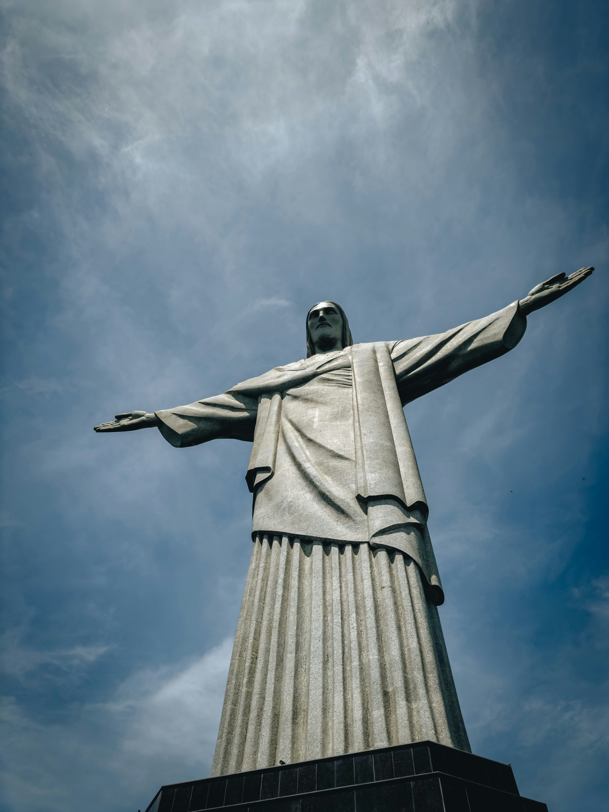

Cristo Redentor
-
Rio de Janeiro, Brasil
Inaugurado em 12 de outubro de 1931, no topo do Morro do Corcovado a 710m de altitude. Em estilo Art Déco, mede 38m de altura e pesa 1.145 tonelada. Projeto do engenheiro Heitor da Silva Costa e do escultor Francês Paul Landowski.
Eleito uma das 7 Maravilhas do Mundo Moderno em 2007.
Melhor horário para visita: amanhecer ou pôr do sol.